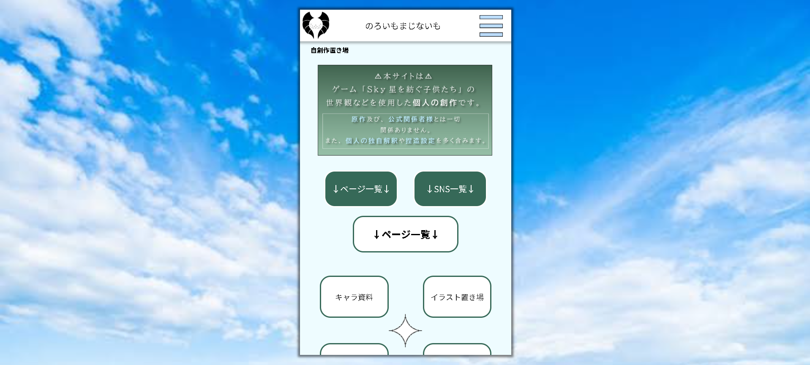
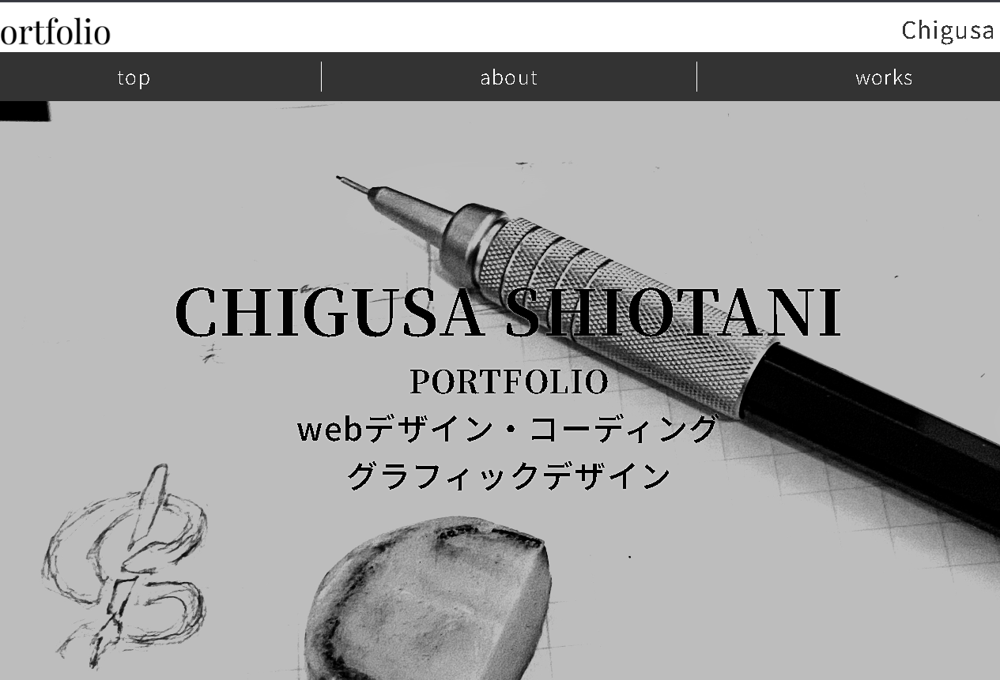

Website Design, coding webサイトデザイン、コーディング

自創作置き場
趣味の創作をまとめておくための個人サイト

ポートフォリオサイト
当サイト
自創作置き場
概要
趣味の創作の資料や作品などが、snsではバラバラになってしまうため、まとめる場所が欲しくて制作。
目的
創作に関する情報をわかりやすく整理しまとめる。
snsをつなぎ、見る人が移動しやすくする。
自身が見返すための物置部屋でもある。
ポイント
二次創作のため、苦手とする人が見なくて済むよう、urlのみの公開且つ、メインビジュアルにワンクッションを載せて、トップページに作品コンテンツが載らないよう工夫。
見る人はスマホを使うことがほとんどだと想定し、レイアウトはそのままに、pcで見たときに余白が別コンテンツで埋まる、スマホサイトとして制作。
原作の印象を残したデザイン（柔らかい色、曲線の多い形状）。
改善点
画像の画質をあげ、縁のがたがたを改善。
ハンバーガーメニューの見直し。
ジャンプ率を上げる。
ポートフォリオサイト
概要
訓練校の課題制作であり、就職活動のために必要なため制作。
目的
自身が制作した作品をわかりやすくまとめ、自己アピールの大きな材料とする。
デザインに必要な「理由」を言語化する。
ポイント
「白黒」や「線」といったコンセプトを決め、サイト全体に統一感が生まれるよう意識。
hoverの動きにも統一感を生ませ、よりサイト全体の統一感を強める。
headerやfooterを共通化するため、javascriptを使用してインクルードし一括管理できるように制作。
また、課題提出ではローカル環境で見ることになり、その場合jsによるインクルードがブロックされてしまうため、対処法としてpythonを使用し、共通部分をインポート済みのファイルを生成。